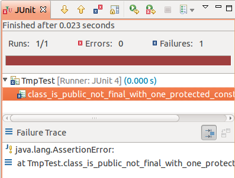

teste == documentação
public void testClass() {
Class cls = DateTimeUtils.class;
assertEquals(true, Modifier.isPublic(cls.getModifiers()));
assertEquals(false, Modifier.isFinal(cls.getModifiers()));
assertEquals(1, cls.getDeclaredConstructors().length);
assertEquals(true, Modifier.isProtected(
cls.getDeclaredConstructors()[0].getModifiers()));
DateTimeUtils utils = new DateTimeUtils() {};
}
Meh...
Sim, e esse é um bom exemplo!
Se você concorda...
Testes legíveis, projetos felizes
Luiz Fernando Oliveira Corte Real
@srsaude
github.com/luiz
About
Mestre em Ciência da Computação 
Desenvolvedor e instrutor na Caelum
About Caelum
Pra quê testes?
Por vários motivos!


Fim?
Ah, é...
public void testClass() {
Class cls = DateTimeUtils.class;
assertEquals(true, Modifier.isPublic(cls.getModifiers()));
assertEquals(false, Modifier.isFinal(cls.getModifiers()));
assertEquals(1, cls.getDeclaredConstructors().length);
assertEquals(true, Modifier.isProtected(
cls.getDeclaredConstructors()[0].getModifiers()));
DateTimeUtils utils = new DateTimeUtils() {};
}
Sobre o que é isso?
Vossa mensagem apeteceu-me de tal forma que demonstrarei publicamente meu regozijo apertando o botão de meu dispositivo de apontamento sobre esta região do documento.
Curtir
Mas o que é conciso?
Aqui ok!
Vossa mensagem apeteceu-me de tal forma que demonstrarei publicamente meu regozijo apertando o botão de meu dispositivo de apontamento sobre esta região do documento.
versusCurtir
Mas e aqui?
assertEquals(true, Modifier.isPublic(cls.getModifiers()));
assertEquals(false, Modifier.isFinal(cls.getModifiers()));
assertThat(cls, both(isPublic(), not(isFinal())));
E aqui?
testClass
versusclassIsPublicNotFinalWithOneProtectedConstructor
E aqui? É conciso?
public void canProvideCustomRequestScopedComponents() {
checkAvailabilityFor(false,
Arrays.<Class<?>>asList(MyRequestComponent.class));
}
Conciso = curto, mas suficiente para passar informação
Conciso = ?
(subjetivo)
Mas...
Orientação a objetos
- Divisão de responsabilidades
- Baixo acoplamento
- Coesão
⇒ código mais fácil de manter
(mais legível)
Tell, don't ask
public void testClass() {
Class cls = DateTimeUtils.class;
assertEquals(true, Modifier.isPublic(cls.getModifiers()));
assertEquals(false, Modifier.isFinal(cls.getModifiers()));
assertEquals(1, cls.getDeclaredConstructors().length);
assertEquals(true, Modifier.isProtected(
cls.getDeclaredConstructors()[0].getModifiers()));
DateTimeUtils utils = new DateTimeUtils() {};
}
Telling
public void testClass() {
Class cls = DateTimeUtils.class;
assertTrue(isPublic(cls));
assertFalse(isFinal(cls)));
assertTrue(hasOnlyConstructors(cls, protectedConstructor));
DateTimeUtils utils = new DateTimeUtils() {};
}
Doing
private boolean isPublic(Class cls) {
return Modifier.isPublic(cls.getModifiers());
}
private boolean isFinal(Class cls) {
return Modifier.isFinal(cls.getModifiers());
}
private boolean hasOnlyConstructors(Class cls,
MyConstructorDescriptionClass... constructors) {
if (constructors.length != cls.length) {
return false;
}
// código meio feio aqui
}
Menos ruído
public void testClass() {
Class cls = DateTimeUtils.class;
assertTrue(isPublic(cls));
assertFalse(isFinal(cls)));
assertTrue(hasOnlyConstructors(cls, protectedConstructor));
DateTimeUtils utils = new DateTimeUtils() {};
}
= mais legibilidade
Dá pra melhorar?
public void testClass() {
Class cls = DateTimeUtils.class;
assertTrue(isPublic(cls));
assertFalse(isFinal(cls)));
assertTrue(hasOnlyConstructors(cls, protectedConstructor));
DateTimeUtils utils = new DateTimeUtils() {};
}
Dá!
Boa prática: nomes claros
public void classIsPublicNotFinalWithOneProtectedConstructor() {
Class cls = DateTimeUtils.class;
assertTrue(isPublic(cls));
assertFalse(isFinal(cls)));
assertTrue(hasOnlyConstructors(cls, protectedConstructor));
DateTimeUtils utils = new DateTimeUtils() {};
}
Melhor ainda!
Má prática: não seguir a convenção da linguagem
Boa prática: quebrar as regras quando isso te ajudar
public void class_is_public_not_final_with_one_protected_constructor() {
Class cls = DateTimeUtils.class;
assertTrue(isPublic(cls));
assertFalse(isFinal(cls)));
assertTrue(hasOnlyConstructors(cls, protectedConstructor));
DateTimeUtils utils = new DateTimeUtils() {};
}
Outro exemplo!
it "should update timestamp if last updated more than one day ago" do
@job.attributes = valid_job_attributes
@job.updated_at = 2.days.ago
Job.record_timestamps = false
@job.save
Job.record_timestamps = true
updated_at = @job.updated_at
@job.update_attributes :title => 'teste'
@job.updated_at.should_not eql(updated_at)
@job.title.should eql('teste')
end
Melhor?
it "should update timestamp if last updated more than one day ago" do
two_days_ago = 2.days.ago
@job.attributes = valid_job_attributes
@job.updated_at = two_days_ago
@job.save_without_timestamps
@job.update_attributes :title => 'teste'
@job.updated_at.should_not eql(two_days_ago)
@job.title.should eql('teste')
end
Espaços? Onde?
- Contexto (Given)
- Ação (When)
- Resultados (Then)
Given/When/Then
it "should update timestamp if last updated more than one day ago" do
two_days_ago = 2.days.ago
@job.attributes = valid_job_attributes
@job.updated_at = two_days_ago
@job.save_without_timestamps
@job.update_attributes :title => 'teste'
@job.updated_at.should_not eql(two_days_ago)
@job.title.should eql('teste')
end
Testes de aceitação
(dor)
Por que!?
public void mostraTarefasDoUsuario() {
Tarefa atrasada = ... // cria a tarefa
Tarefa hoje = ... // cria a tarefa
Tarefa amanha = ... // cria a tarefa
Page currentPage = browser.currentPage();
assertTrue(currentPage.div("tarefa_atrasada_" + atrasada.getId())
.exists());
assertTrue(currentPage.div("tarefa_hoje_" + hoje.getId())
.exists());
assertTrue(currentPage.div("tarefa_prox_" + amanha.getId())
.exists());
}
Hmm... ok! :)
Por que!?!?
public void someComTarefaJaPronta() {
Tarefa atrasada = ... // cria a tarefa
Tarefa hoje = ... // cria a tarefa
Tarefa amanha = ... // cria a tarefa
Page currentPage = browser.currentPage();
currentPage.click("feita_" + amanha.getId());
currentPage.navigate("jqibuttonSim");
assertTrue(currentPage.div("tarefa_atrasada_" + atrasada.getId())
.exists());
assertTrue(currentPage.div("tarefa_hoje_" + hoje.getId())
.exists());
assertFalse(currentPage.div("tarefa_prox_" + amanha.getId())
.exists());
}
Refatorei o JavaScript da página!o colega de trabalho que você quer matar agora
Por que!?!?!?
public void mostraTarefasDoUsuario() {
Tarefa atrasada = ... // cria a tarefa
Tarefa hoje = ... // cria a tarefa
Tarefa amanha = ... // cria a tarefa
Page currentPage = browser.currentPage();
assertTrue(currentPage.div("tarefa_atrasada_" + atrasada.getId()).exists());
assertTrue(currentPage.div("tarefa_hoje_" + hoje.getId()).exists());
assertTrue(currentPage.div("tarefa_prox_" + amanha.getId()).exists());
}
Por que!?!?!?!?
public void someComTarefaJaPronta() {
Tarefa atrasada = ... // cria a tarefa
Tarefa hoje = ... // cria a tarefa
Tarefa amanha = ... // cria a tarefa
Page currentPage = browser.currentPage();
currentPage.click("feita_" + amanha.getId());
currentPage.navigate("jqibuttonSim");
assertTrue(currentPage.div("tarefa_atrasada_" + atrasada.getId()).exists());
assertTrue(currentPage.div("tarefa_hoje_" + hoje.getId()).exists());
assertFalse(currentPage.div("tarefa_prox_" + amanha.getId()).exists());
}
De volta à orientação a objetos...
Copiou, colou? Isolou!
public void mostraTarefasDoUsuario() {
Tarefa atrasada = ... // cria a tarefa
Tarefa hoje = ... // cria a tarefa
Tarefa amanha = ... // cria a tarefa
PaginaDeTarefas tarefas = new PaginaDeTarefas(browser);
assertTrue(tarefas.mostrouTarefaAtrasada(atrasada));
assertTrue(tarefas.mostrouTarefaHoje(hoje));
assertTrue(tarefas.mostrouProximaTarefa(amanha));
}
De volta à orientação a objetos...
Copiou, colou? Isolou!
public class PaginaDeTarefas {
// construtor
public boolean mostrouTarefaAtrasada(Tarefa atrasada) {
return currentPage.div("tarefa_atrasada_" + atrasada.getId()).exists();
}
public boolean mostrouTarefaHoje(Tarefa hoje) {
return currentPage.div("tarefa_hoje_" + hoje.getId()).exists();
}
public boolean mostrouProximaTarefa(Tarefa amanha) {
return currentPage.div("tarefa_prox_" + amanha.getId()).exists();
}
}
Page Objects

Cria a tarefa...
public void mostraTarefasDoUsuario() {
Tarefa atrasada = ... // cria a tarefa
Tarefa hoje = ... // cria a tarefa
Tarefa amanha = ... // cria a tarefa
PaginaDeTarefas tarefas = new PaginaDeTarefas(browser);
assertTrue(tarefas.mostrouTarefaAtrasada(atrasada));
assertTrue(tarefas.mostrouTarefaHoje(hoje));
assertTrue(tarefas.mostrouProximaTarefa(amanha));
}
Assim!
public void mostraTarefasDoUsuario() {
Calendar ontem = Calendar.getInstance();
ontem.roll(Calendar.DAY_OF_MONTH, -1);
Calendar hoje = Calendar.getInstance();
Calendar amanha = Calendar.getInstance();
amanha.roll(Calendar.DAY_OF_MONTH, 1);
Tarefa atrasada = new Tarefa(usuario, ontem, new Categoria(), "Acabar palestra");
Tarefa hoje = new Tarefa(usuario, hoje, new Categoria(), "Apresentar palestra");
Tarefa amanha = new Tarefa(usuario, amanha, new Categoria(), "Descansar");
// ...
}
Hmmm... :/
Acho que já vi isso antes...
public void testeSemMocks() {
Produtos p = new Produtos(
new Item(new Categoria(), new Valor()),
new Item(new Categoria(), new Valor()));
// ...
}
criaItem!
public void testeSemMocks() {
Produtos p = new Produtos(criaItem(), criaItem());
// ...
}
private Item criaItem() {
return new Item(new Categoria(), new Valor());
}
Melhor ainda!
Builder
public void testeSemMocks() {
ItemBuilder itens = new ItemBuilder();
Produtos p = new Produtos(itens.cria(), itens.cria());
// ...
}
Melhor ainda!!
+ DSL
public void testeSemMocks() {
Builder builder = new Builder();
Produtos p = new Produtos(builder.umItem().comValor(15.00).cria(),
builder.umItem().comValor(15.00).cria());
// ...
}
Voltando...
public void mostraTarefasDoUsuario() {
Calendar ontem = Calendar.getInstance();
ontem.roll(Calendar.DAY_OF_MONTH, -1);
Calendar hoje = Calendar.getInstance();
Calendar amanha = Calendar.getInstance();
amanha.roll(Calendar.DAY_OF_MONTH, 1);
Tarefa atrasada = new Tarefa(usuario, ontem, new Categoria(), "Acabar palestra");
Tarefa hoje = new Tarefa(usuario, hoje, new Categoria(), "Apresentar palestra");
Tarefa amanha = new Tarefa(usuario, amanha, new Categoria(), "Descansar");
// ...
}
Voltando...
public void mostraTarefasDoUsuario() {
Tarefa atrasada = mother.umaTarefa()
.para(mother.ontem())
.comDescricao("Terminar palestra")
.build();
Tarefa hoje = mother.umaTarefa()
.para(mother.hoje())
.comDescricao("Apresentar palestra")
.build();
Tarefa amanha = mother.umaTarefa()
.para(mother.amanha())
.comDescricao("Descansar")
.build();
// ...
}
E o builder...
public class TarefaBuilder {
private Tarefa tarefa;
public TarefaBuilder(ObjectMother mother) {
this.mother = mother;
this.tarefa = defaults();
}
private Tarefa defaults() {
return new Tarefa(mother.umUsuario().build(),
mother.hoje(),
mother.umaCategoria().build(),
"");
}
public TarefaBuilder para(Calendar dia) {
tarefa.setPrazo(dia);
return this;
}
public TarefaBuilder comDescricao(String descricao) {
tarefa.setDescricao(descricao);
return this;
}
public Tarefa build() {
return tarefa;
}
}
Orientação a objetos
Disclaimer
public void canProvideCustomRequestScopedComponents() {
checkAvailabilityFor(false,
Arrays.<Class<?>>asList(MyRequestComponent.class));
}
Dá para melhorar?
Teste == documentação
- De como deve funcionar
- Do que está errado
Fundamental para TDD!
public void class_is_public_not_final_with_one_protected_constructor() {
Class cls = DateTimeUtils.class;
assertTrue(isPublic(cls));
assertFalse(isFinal(cls)));
assertTrue(hasOnlyConstructors(cls, protectedConstructor));
DateTimeUtils utils = new DateTimeUtils() {};
}
Mensagens de erro!
public void class_is_public_not_final_with_one_protected_constructor() {
Class cls = DateTimeUtils.class;
assertTrue("Class is public", isPublic(cls));
assertFalse("Class is not final", isFinal(cls)));
assertTrue("Class has only one constructor and it's protected",
hasOnlyConstructors(cls, protectedConstructor));
DateTimeUtils utils = new DateTimeUtils() {};
}
public void class_is_public_not_final_with_one_protected_constructor() {
Class cls = DateTimeUtils.class;
assertTrue("Class is public", isPublic(cls));
assertFalse("Class is not final", isFinal(cls)));
assertTrue("Class has only one constructor and it's protected",
hasOnlyConstructors(cls, protectedConstructor));
DateTimeUtils utils = new DateTimeUtils() {};
}
Redundância :/
isPublic, isFinal: onde colocar?
Dá para melhorar?
Ferramentas
Hamcrest
public void class_is_public_not_final_with_one_protected_constructor() {
Class cls = DateTimeUtils.class;
assertThat(cls, MyMatchers.isPublic());
assertThat(cls, Matchers.not(MyMatchers.isFinal()));
assertThat(cls.getDeclaredConstructors(),
Matchers.arrayContaining(MyMatchers.protectedConstructor()));
DateTimeUtils utils = new DateTimeUtils() {};
}
Matchers
public class MyMatchers {
public static Matcher<Class> isPublic() {
return new TypeSafeMatcher<Class>() {
public boolean matchesSafely(Class cls) {
return Modifier.isPublic(cls.getModifiers());
}
public void describeTo(Description desc) {
desc.appendText("public class");
}
};
}
}
Calma :)
public void cool_asserts() {
assertThat(true, is(true));
assertThat(123, equalTo(123));
assertThat("important", containsString("ant"));
assertThat(Arrays.asList(1, 2, 3), hasItems(2, 3));
assertThat(Arrays.asList(1, 2, 3), not(hasItems(4)));
}
O céu é o limite
assertThat(tarefa, ehPara(mother.ontem()));
Matcher customizado
public class PrazoDeTarefaMatcher extends TypeSafeMatcher<Tarefa> {
private Calendar prazoEsperado;
public PrazoDeTarefaMatcher(Calendar prazoEsperado) {
this.prazoEsperado = prazoEsperado;
}
public boolean matchesSafely(Tarefa recebida) {
return recebida.getPrazo().equals(this.prazoEsperado);
}
public void describeTo(Description desc) {
desc.appendText("Tarefa para " + this.prazoEsperado);
}
@Factory
public static PrazoDeTarefaMatcher ehPara(Calendar prazo) {
return new PrazoDeTarefaMatcher(prazo);
}
}
Mais Hamcrest
Melhorando a legibilidade de seus testes com o Hamcrest
(blog da Caelum)
http://is.gd/2DfDsABuilders!
public class ObjectMother {
public TarefaBuilder umaTarefa() {}
public UsuarioBuilder umaTarefa() {}
public ProdutoBuilder umaTarefa() {}
public ClienteBuilder umaTarefa() {}
// 1 para cada entidade ...
}
Ferramentas!
- Fixture Factory (Java)
- factory_girl (Ruby)
- Rosie (JS)
Exemplo!
Factory.define :job do |f|
f.sequence(:title) {|n| "Title#{n}"}
f.sequence(:description) {|n| "Description#{n}" }
f.association :local, :factory => :local
f.association :company, :factory => :company
f.enabled true
f.how_to_apply "by email"
f.terms_accepted true
f.tag_list 'arroz feijao fuba'
end
Factory(:job) # já cria e salva no banco
Factory(:job, :enabled => false) # customiza